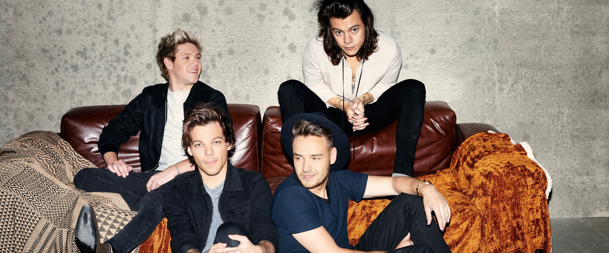

Harry Edward Styles(born 1 February 1994) is an English singer. His musical career began in 2010 as part of One Direction, a boy band formed on the British music competition series The X Factor after each member of the band had been eliminated from the solo contest. They became one of the best-selling boy groups of all time before going on an indefinite hiatus in 2016.
Styles released his self-titled debut solo album through Columbia Records in 2017. It debuted at number one in the UK and the US and was one of the world's top-ten best-selling albums of the year, while its lead single, "Sign of the Times", topped the UK Singles Chart. Styles' second album, Fine Line (2019), debuted atop the US Billboard 200 with the biggest ever first-week sales by an English male artist, and was the most recent album to be included in Rolling Stone's "500 Greatest Albums of All Time" in 2020. Its fourth single, "Watermelon Sugar", topped the US Billboard Hot 100. Styles' third album, Harry's House (2022), broke several records and was widely acclaimed, receiving the Grammy Award for Album of the Year in 2023. Its lead single, "As It Was", became the number-one song of 2022 globally according to Billboard.
Styles released his self-titled debut solo album through Columbia Records in 2017. It debuted at number one in the UK and the US and was one of the world's top-ten best-selling albums of the year, while its lead single, "Sign of the Times", topped the UK Singles Chart. Styles' second album, Fine Line (2019), debuted atop the US Billboard 200 with the biggest ever first-week sales by an English male artist, and was the most recent album to be included in Rolling Stone's "500 Greatest Albums of All Time" in 2020. Its fourth single, "Watermelon Sugar", topped the US Billboard Hot 100. Styles' third album, Harry's House (2022), broke several records and was widely acclaimed, receiving the Grammy Award for Album of the Year in 2023. Its lead single, "As It Was", became the number-one song of 2022 globally according to Billboard.
Career
2010–2015: The X Factor and One Direction
Following a suggestion from his mother, on 11 April 2010, Styles auditioned as a solo contestant for the seventh series of the British televised singing competition The X Factor, singing a rendition of Train's "Hey, Soul Sister". After Simon Cowell suggested that the track was not right for him, he instead sang a rendition of Stevie Wonder's "Isn't She Lovely". He advanced to bootcamp but failed to progress further. Four others in his age group who were also eliminated were put together to form a band in July 2010 to compete in the "Groups" category, mentored by Cowell. The group consisting of Styles, Niall Horan, Liam Payne, Louis Tomlinson, and Zayn Malik practised for two weeks; Styles suggested the name One Direction to his bandmates, and they agreed to keep it. They began to gain considerable popularity in the UK, and within the first four weeks of the live shows, were Cowell's last act in the competition.[18] The group eventually reached the final of The X Factor and finished in third place.
In January 2011, One Direction signed a recording contract with Cowell's label Syco Records. Their UK number one debut single, "What Makes You Beautiful", and their debut studio album, Up All Night, were released later that year. The album, which contained three songs co-written by Styles, made One Direction the first British group to have their debut album reach number one in the United States. Their four succeeding studio albums—Take Me Home (2012), Midnight Memories (2013), Four (2014) and Made in the A.M. (2015)—all debuted at number one in the UK.[26] Midnight Memories was the world's best-selling album of 2013, and its accompanying Where We Are Tour was the highest-grossing tour of 2014 and remains the highest-grossing tour of all time by a vocal group. After the release of Four, One Direction became the only group in the 58-year history of the Billboard 200 albums chart to have their first four albums debut at number one. The albums spawned a string of successful singles, including "Live While We're Young", "Little Things", "Best Song Ever", "Story of My Life", "Drag Me Down" and "History". Styles also co-wrote the song "Just a Little Bit of Your Heart" for Ariana Grande's 2014 album My Everything.
Not wanting to "exhaust" the fan base, upon Styles' suggestion, the band went on an indefinite hiatus in 2016, after completing promotional activities related to Made in the A.M. Since their debut, One Direction have sold 70 million records worldwide, including 7.6 million albums and 26 million singles in the US, becoming one of the best-selling boy bands of all time. The group amassed numerous accolades, including seven Brit Awards,[38] seven American Music Awards,[39] six Billboard Music Awards,and four MTV Video Music Awards. While Styles has been generally positive about his time in One Direction, he has revealed that the hyper-visibility he experienced while being in the band was not always easy to deal with. Styles attributed his avoidance of social media to past pressure that he should be constantly accessible online. He has spoken about being scared of saying the wrong things in interviews and of fear that not answering questions such as the number of people he slept with would cause journalists to leave the interview annoyed with him. His contracts with One Direction contained "cleanliness clauses" which stated that they would be "null and void" if he did not obey them[...]. He expressed that he "burst into tears" when he signed a solo contract without these clauses because he felt "free."
2016–2018: Harry Styles
As a solo artist, Styles joined Jeffrey Azoff's Full Stop Management and talent agency CAA, signing a recording contract with Columbia Records in the first half of 2016.Around this time, he also launched his own record label, Erskine Records. Recording for Styles's debut album occurred throughout 2016 in Los Angeles, London and Port Antonio, Jamaica, where Styles and his collaborators had a two-month writing retreat in the autumn. In March 2017, he announced that his first solo single, "Sign of the Times", would be released on 7 April. The song peaked at number one on the UK Singles Chart and number four on the Billboard Hot 100. A glam rock-influenced soft rock power ballad, it drew comparisons to the work of David Bowie. Rolling Stone ranked "Sign of the Times" as the best song of 2017. Its music video featured Styles flying and walking on water and won the Brit Award for British Video of the Year. In April, Styles was a musical guest on Saturday Night Live in the US and made his debut televised solo performance in the UK on The Graham Norton Show.
His self-titled debut album was released in May 2017, whereupon it debuted at number one in several countries, including Australia, the UK and the US. The record was influenced by 1970s soft rock and was described by Variety as a "classic cocktail of psychedelia, Britpop, and balladry". It received generally favourable reviews from critics and was included in several publications' lists of the best albums of 2017.[Harry Styles yielded two more singles, "Two Ghosts" and "Kiwi". The film Harry Styles: Behind the Album, which documented the writing and recording process for the album, was released in May exclusively on Apple Music. Styles embarked on his first headlining concert tour, Harry Styles: Live on Tour, from September 2017 through to July 2018, performing in North and South Americas, Europe, Asia, and Australia. On tour he debuted two unreleased songs, 'Anna' and Medicine,"
Fine Line was released on 13 December. The album was recorded at the Shangri-La studio in Malibu, California with the same production team behind Styles's debut album and featured a similar sound to Harry Styles while also incorporating elements of funk and soul. It received generally positive reviews from critics. The album peaked at number two in the UK and topped the US charts, breaking the record as the biggest sales debut from an English male artist in the US since Nielsen SoundScan began electronically tracking sales data in 1991. Rolling Stone ranked it at number 491 in their 2020 list of the "500 Greatest Albums of All Time". Five other singles, "Falling", "Watermelon Sugar", "Golden", "Treat People with Kindness" and the title track, were released from the album."Watermelon Sugar" became Styles's fourth UK top-ten single, peaking at number four, as well as his first number-one single in the US. A tour to support Fine Line, entitled Love On Tour, which was originally set to take place throughout 2020, was postponed until 2021 due to the COVID-19 pandemic.

2022–present: Harry's House
In 2022, Styles achieved critical and commercial success with his third album, Harry's House. Its lead single "As It Was" debuted atop the UK and US charts, becoming his second solo number one single in both countries. In the US, it became the fourth longest running number-one in the charts history at 15 weeks. The album similarly debuted atop the UK and US charts. During its release week, Styles occupied the top spot of the album and singles charts, in both the UK and US, with Harry's House and "As It Was", respectively.With four tracks from the album concurrently charting within the US top 10, he became the first British solo artist to achieve this feat. He headlined the Coachella Valley Music and Arts Festival in April. In June, Styles and his song "Music for a Sushi Restaurant" were featured in a new AirPods commercial for Apple. A music video for Harry's House second single "Late Night Talking" was released on 13 July. Later that month, Harry's House was shortlisted for the Mercury Prize. At the 2022 MTV Video Music Awards, Styles received three accolades, including Album of the Year for Harry's House. Harry's House won Album of the Year and Best Pop Vocal Album at the 65th Grammy Awards, and British Album of the Year at 43rd Brit Awards.
In August and September 2022, as part of his Love On Tour, Styles performed 15 sold-out shows at Madison Square Garden. To mark the achievement, a permanent banner was raised in his honor inside the venue. He became the third musical artist in history to have a banner raised at Madison Square Garden, following rock band Phish and artist Billy Joel. In November 2022, Gucci released a collaborative collection between Alessandro Michele and Styles, titled "Gucci Ha Ha Ha". At the American Music Awards of 2022, Styles won Favorite Male Pop Artist and Favorite Pop Song.[159] Love On Tour concluded in July 2023 as the then-fourth highest-grossing tour of all time, earning $617.3 million.